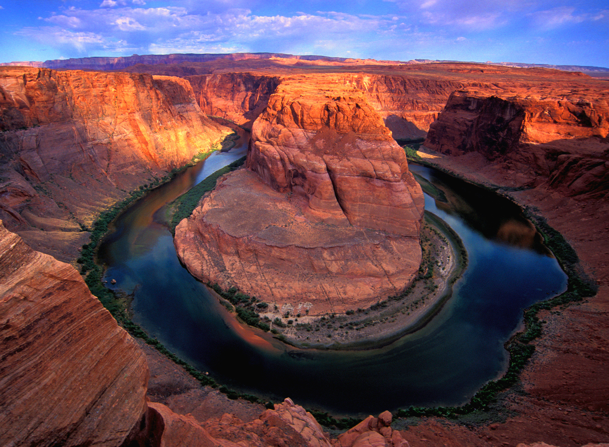
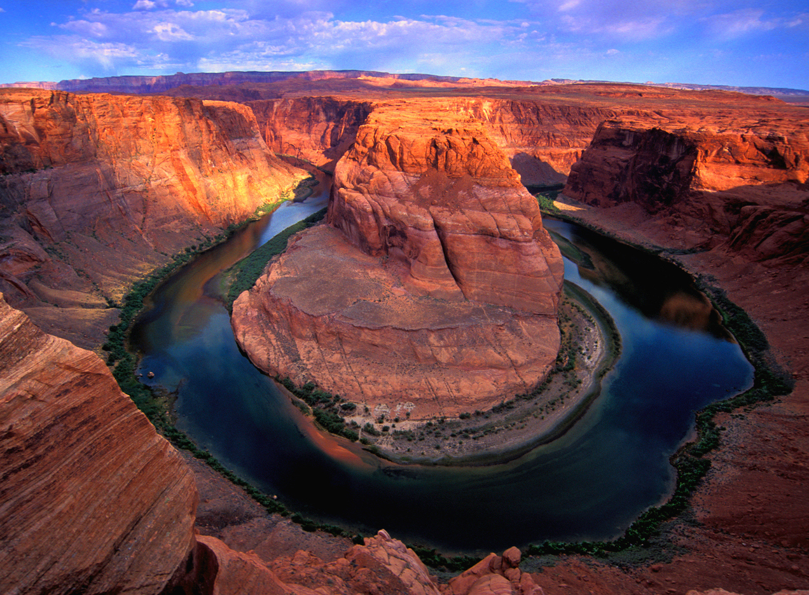

Paris, France


Geographical Location: Europe
A city of culture, rich history, and fantastic food, Paris lives up to its iconic reputation in many ways. With notable landmarks including the Eiffel Tower, the Louvre, the Notre Dame, and the Arc de Triomphe, there is a long list of attractions that entice tourists from all over the world. If you get hungry, go visit one of the many Michelin-starred restaurants this city has to offer.
This magnificent city houses treasures like the Mona Lisa, and the Musée d'Orsay, showcasing various impressionist masterpieces. From the romantic allure of the Champs-Élysées to the winding Seine river, Paris is a magical place that cannot be rivaled.
Photo Gallery

The magnificent Eiffel Tower in all it’s glory.

The Louvre hosts some of the most famous works of art in the world, including the Mona Lisa.

The Notre Dame is an iconic cathedral known for its Gothic features and dark history Arc.

The Arc de Triomphe is a famous monument dedicated to those who fought and died during the French Revolution.

Dramatic sunset over the river Seine
Barcelona


Geographical Location: Europe
Barcelona is a wonderful destination in Spain with all the necessities for a perfect vacation. It has a population of roughly 1.6 million people and is located right on the beach of the Mediterranean Sea. It is a hub of Art and Architecture as well as technology and contains a vibrant culture.
There are many activities to do in Barcelona as well as things to see. One of the most popular activities is to visit Camp Nou and watch the amazing Barcelona FC soccer team play against various other teams in La Liga. There are also many architectural masterpieces designed by Antonio Gaudi to explore such as various Gaudi Houses and Parks and La Sagrada Familia, the largest unfinished catholic church in the world.
Photo Gallery

Beach in Barcelona

Roof of a Building designed by revolutionary architect Gaudi

A Barcelona soccer player dribbles past 3 defenders

A Balcony and Two houses designed by Architect Gaudi

Large church still under construction designed by Architect Gaudi
Mexico City, Mexico


Geographical Location: North America
Mexico City is the capital of Mexico. The city is full of Museums that vary from history, art, and even the history of the Mexican coin. In 2020 the Mexico city total population. was about 9.2 million The city is 571 miles squared
For tourists, there are places like an amusement park called Feria de Chapultepec and giant zoo Zoológico de Chapultepec that are a must visit. In the photo gallery there are also major attractions to visit.
Photo Gallery

Castillo de Chapultepec (Chapultepec Castle) is a castle that is located in Miguel Hidalgo, Mexico City.

Angel de la independencia (Angel of Independence) is an important monument located in Cuauhtémoc, Mexico City.

Templo Mayor (Mayor Temple) is a museum that is built by the ruins of an ancient temple.

This is the tomb of Margarita Maza de Juarez who was the wife of Benito Juarez (A historical president).

Estadio Azteca is the stadium where the national Mexican soccer team plays and the team Club América.
Grand Canyon
 

Geographical Location: North America
The Grand Canyon is a natural geological formation located in the state of Arizona. It is a steep-sided canyon carved by the Colorado River over millions of years. The canyon is known for its size, vibrant and varied colors, and intricate rock formations. It is one of the most famous and visited natural landmarks in the United States and around the world.
Though the Grand Canyon is one of the most iconic places to travel, there are many dangers that come from such a terrain. Between 2010 and 2020, 134 have died, mainly due to extreme heat. You can see below, examples of people getting hurt due to the heat and carelessness.
A Canadian hiker has died at the Grand Canyon
Photo Gallery


Harbin


Asia
Harbin, often referred to as the "Ice City," is the capital of Heilongjiang Province in northeastern China. It has beautiful winter landscapes and Russian-influenced architecture, and the city serves as a major cultural and economic hub in the region. Established in the late 19th century as a fishing village near the Songhua River, Harbin quickly transformed into a vibrant cosmopolitan center, particularly due to the construction of the Eastern Chinese Railway by Russian engineers.
Today, Harbin is most famous for its annual International Ice and Snow Sculpture Festival, where colossal ice sculptures and intricate snow art transform the city into a winter wonderland. Harbin is also famous for its unique Russian foods including the Russian sausages and beer. It is a unique blend of Chinese and Russian cultures.
Photo Gallery

This is the daytime view of Saint Sophia’s church. With its distinctive green domes, golden crosses, and intricate frescoes, the cathedral is an architectural gem that harkens back to Harbin's past when the city was a meeting point for Chinese and Russian cultures. Saint Sophia's Church

This is the center of the world's largest ice sculpture festival. People make amazing ice sculptures such as the castle in the picture every year.

This is the largest commercial street in Harbin. This pedestrian-only avenue is lined with an array of historic buildings that showcase a unique blend of Russian, French, and other European influences.

This is the night view of the beautiful sculptures in Harbin. During the winter, people build these ice sculptures and use light to decorate these amazing buildings in the night. Ice sculptures in night

Harbin Institute of Technology is one of the top universities in China. It is famous for its engineering and science research.